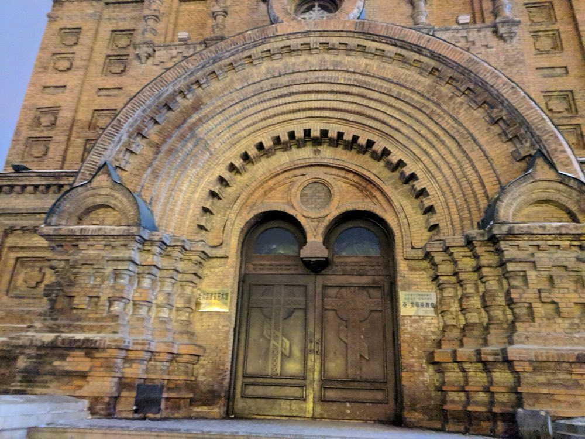
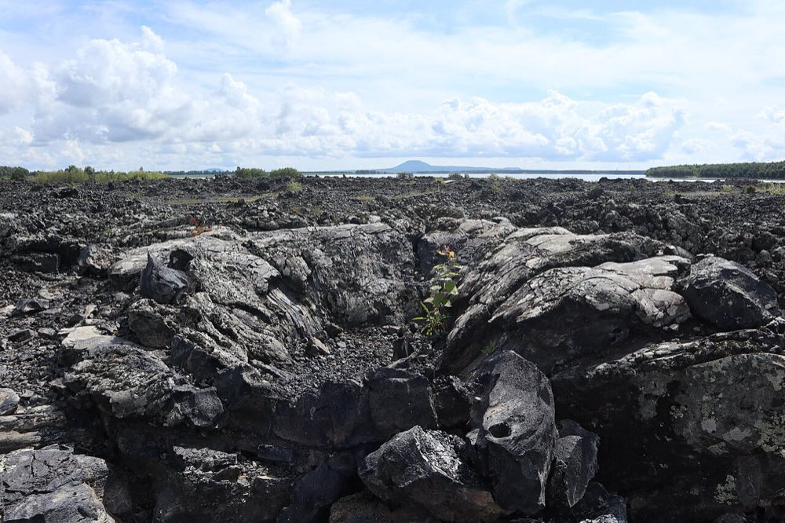

东北边境环线自驾
从沈阳出发三周的环线自驾，沿着中朝、中俄边境走：鸭绿江和高句丽古墓、长白山天池、朝鲜族聚居的延边、防川“一眼望三国”、俄式风情的哈尔滨和黑河，还有火山、鹤乡湿地和伪满历史。
2026 年 11 月为 2027 年 5 月下旬至 6 月中旬的行程所做的调研。开放时间、价格、边境和预约规则会变，出发前请再确认。车程和距离为估算，请以高德地图为准。

为什么选这条环线
沿着中国边缘的一趟自驾：隔着鸭绿江看朝鲜，站在中俄朝三国交界处，一路感受朝鲜族、满族和俄罗斯文化，还能登上长白山天池，全程都是凉爽的初夏。
5 月下旬至 6 月中旬： 15–28°C，白昼很长，是东北一年中最好的季节。长白山天池通常 6 月已开冰开放（5 月下旬仍可能因大风或结冰关闭）。湿地和森林里蚊子、小咬和蜱虫活跃。2027 年端午节 6 月 9 日（周三）只放一天。
路线： 沈阳 → 丹东 → 桓仁 → 集安 → 长白山 → 图们 → 延吉 → 防川 → 珲春 → 牡丹江（绥芬河一日游）→ 哈尔滨 → 五大连池 → 黑河 → 嫩江 → 齐齐哈尔 → 大庆 → 查干湖 → 长春 → 沈阳。21 天，约 4,000 公里（另加一日游），每段车程最长约 3 个半小时。
亮点
- 面对朝鲜的鸭绿江断桥和虎山长城
- 桓仁、集安的高句丽王城和王陵（世界遗产）
- 长白山天池和长白瀑布
- 防川：一眼望中俄朝三国
- 哈尔滨的俄式建筑、黑龙江畔的黑河和瑷珲历史陈列馆
- 五大连池火山湖（2026 年部分景点关闭）、扎龙丹顶鹤和长春伪满皇宫
须知
- 许多国家护照可免签 30 天（请查询）。每天都要带护照：边境地区有证件检查站，外国人在防川可能到不了中俄界碑。
- 至少每 350 公里补一次电，在黑河、嫩江、二道白河充满：偏远路段充电桩少。
- 长白山需实名预约；第二天留作天气备用。
- 去扎龙、五大连池和森林要穿长袖、带驱蚊液（防蜱虫）。
两种玩法
💰 最划算
- 住： 每座城市的“划算”选择，四星或平台同等级（见住宿）。
- 吃： 在评分好的平价老店吃地方特色。
- 每人约 CNY 12,190–15,740 元 （21 天，含租车，不含到起点的交通）。
✨ 最佳体验
- 住： 长白山温泉度假酒店、哈尔滨中央大街历史酒店、黑河江景房、查干湖湖畔度假酒店。
- 吃： 延吉朝鲜族烤肉、哈尔滨和黑河的俄式餐厅、查干湖全鱼宴、丹东海鲜。
- 每人约 CNY 14,490–19,590 元。
两种玩法路线和天数相同，只是住宿和餐饮不同。
路线地图
● 带序号：按顺序的住宿城市 ● 开车日的午餐或途经景点 ● 从住地出发的一日游（虚线）。点击地点可看是第几天。 路线按 OpenStreetMap 路网绘制，仅供参考。
行程：21 天 20 晚
每个开车日要么只开一段（早出发，赶到目的地吃迟午餐，下午只看景点），要么分上午、下午两段，中间停下吃午餐。去景点的短途不计。
上午
乘飞机或火车到沈阳；取车。
午餐
沈阳午餐：老边饺子。
下午
沈阳故宫（世界遗产）和张氏帅府。
上午
🚗 沈阳 → 丹东 · 245 km · 2 小时 45
约 9:30 出发。
午餐
丹东吃迟午餐：黄海海鲜。
下午
鸭绿江断桥，对岸是朝鲜新义州。
上午
🚗 丹东 → 虎山长城 · 20 km · 30 分钟
8:30 游虎山长城和“一步跨”。
午餐
在虎山或宽甸午餐。
下午
🚗 虎山 → 桓仁 · 200 km · 2 小时 45
傍晚到桓仁。
⚡ 充电 在午餐地点 （距上次充电约 315 km）
上午
开门即登五女山（高句丽第一座王城，世界遗产）。
午餐
桓仁午餐。
下午
🚗 桓仁 → 集安 · 175 km · 2 小时 30
集安江边，对岸就是朝鲜。
⚡ 充电 在午餐地点 （距上次充电约 210 km）
上午
🚗 集安 → 通化 · 95 km · 1 小时 20
8:30 起看高句丽王陵和好太王碑，约 10:00 出发。
午餐
通化午餐。
下午
🚗 通化 → 二道白河 · 260 km · 3 小时
傍晚到长白山北坡的二道白河。
⚡ 充电 在午餐地点 （距上次充电约 290 km）
上午
北坡：一早上天池（视天气）。
午餐
景区内午餐。
下午
长白瀑布和温泉。若天池关闭可留作备用。
上午
🚗 二道白河 → 图们 · 190 km · 2 小时 30
约 9:30 出发。
午餐
在图们午餐，然后在图们江大桥观景处看对岸朝鲜（不要上桥）。
下午
🚗 图们 → 延吉 · 50 km · 45 分钟
延边大学网红墙、朝鲜族美食街；晚餐吃烤肉。
⚡ 充电 前一晚在酒店或出发前 （距上次充电约 330 km）
上午
🚗 延吉 → 防川 · 175 km · 2 小时 15
约 8:30 出发，带好护照。
午餐
在防川（敬信）午餐（备些干粮），然后上龙虎阁一眼望三国。外国人能否进入以现场为准。
下午
🚗 防川 → 珲春 · 60 km · 50 分钟
晚上在珲春。
⚡ 充电 前一晚在酒店或出发前 （距上次充电约 260 km）
上午
🚗 珲春 → 汪清 · 100 km · 1 小时 30
约 9:00 出发，走高速。
午餐
在汪清午餐（朝鲜族菜）。
下午
🚗 汪清 → 牡丹江 · 200 km · 2 小时 15
晚上在牡丹江。（若 G331 边境公路开放且想走，见“自驾与充电”中的说明。）
⚡ 充电 前一晚在酒店或出发前 （距上次充电约 255 km）
上午
去绥芬河（约 150 公里，1 小时 45 分，观光往返）。
午餐
在绥芬河吃俄式午餐；老街、中俄互市贸易区和俄式老建筑。
下午
傍晚回牡丹江。（加去东宁要塞会变成三段车程，故不安排。）
⚡ 充电 今晚在酒店 （距上次充电约 320 km）
上午
镜泊湖和吊水楼瀑布（单程约 90 公里、1 小时 15 分，观光往返）。
午餐
湖边午餐：镜泊湖鱼。
下午
傍晚回牡丹江。
⚡ 充电 今晚在酒店 （距上次充电约 330 km）
上午
🚗 牡丹江 → 哈尔滨 · 330 km · 3 小时 45
约 8:30 出发。
午餐
哈尔滨吃迟午餐：锅包肉。
下午
中央大街和圣索菲亚教堂。
⚡ 充电 前一晚在酒店或出发前 （距上次充电约 180 km）
上午
侵华日军第七三一部队罪证陈列馆。
午餐
俄式西餐午餐（华梅或马迭尔）。
下午
松花江和太阳岛；哈尔滨啤酒。
⚡ 充电 今晚在酒店 （距上次充电约 350 km）
上午
🚗 哈尔滨 → 北安 · 320 km · 3 小时 30
约 8:30 出发。
午餐
北安午餐。
下午
🚗 北安 → 五大连池 · 65 km · 1 小时
黄昏游湖畔。
⚡ 充电 前一晚在酒店或出发前 （距上次充电约 40 km）
⚡ 充电 在午餐地点 （距上次充电约 320 km）
上午
老黑山、水晶宫、南药泉因自然保护区管控关闭（2026 年 9 月官方答复）。若已重开就开门即去；否则游湖畔和其他开放景点（以当地为准）。
午餐
五大连池午餐：矿泉豆腐。
下午
🚗 五大连池 → 黑河 · 255 km · 3 小时 15–3 小时 30
黄昏到黑龙江畔，对岸是布拉戈维申斯克。
⚡ 充电 今晚在酒店 （距上次充电约 340 km）
上午
瑷珲历史陈列馆（《瑷珲条约》），约 30 公里。
午餐
黑河俄式午餐。
下午
中俄民贸街和江边。
上午
🚗 黑河 → 嫩江 · 240 km · 3 小时
约 9:00 出发，先充满电。
午餐
嫩江吃迟午餐。
下午
休息、充电。
上午
🚗 嫩江 → 扎龙 · 280 km · 3 小时 15
约 9:00 出发。
午餐
在扎龙吃迟午餐。
下午
🚗 扎龙 → 齐齐哈尔 · 35 km · 40 分钟
先在湿地看丹顶鹤；晚餐吃齐齐哈尔烤肉。
⚡ 充电 前一晚在酒店或出发前 （距上次充电约 350 km）
上午
🚗 齐齐哈尔 → 大庆 · 140 km · 1 小时 40
约 9:30 出发。
午餐
大庆午餐。
下午
🚗 大庆 → 查干湖 · 195 km · 2 小时 50
傍晚游查干湖；晚餐吃湖鱼。住湖畔。
⚡ 充电 前一晚在酒店或出发前 （距上次充电约 335 km）
⚡ 充电 今晚在酒店 （距上次充电约 335 km）
上午
🚗 查干湖 → 长春 · 220 km · 2 小时 30
约 9:30 出发。
午餐
长春吃迟午餐。
下午
伪满皇宫博物院和“八大部”（外观）。
上午
🚗 长春 → 沈阳 · 300 km · 3 小时 20
约 9:00 出发。
午餐
沈阳吃迟午餐。
下午
还车；乘飞机或火车回家。
⚡ 充电 前一晚在酒店或出发前 （距上次充电约 250 km）
自驾与充电
- 在中国开车需要中国驾照。外国游客可凭护照和驾照翻译件到车管所办理临时驾驶许可（最长 3 个月）；国际驾照不被认可。
- 第二司机：长途环线最好有两位司机。每位司机都要有自己的中国驾照或临时驾驶许可（在租车公司所在城市办理，须在出发前办好），并写进租车合同，否则保险可能不赔。
- 租车：取得一份书面报价，写明具体车型、21 天总价、里程上限与超里程费、押金与预授权、保险免赔额、第二司机费用、ETC 过路费结算、充电卡、边境区域限制及故障换车规则。部分公司把 7–27 天按周租计价，而非月租。
- 手机和支付：抵达后凭护照办一张中国 +86 手机卡（多数充电和预约 App 需要国内号码），保留本国号码接收银行验证码。出发前用外卡开通支付宝和微信支付并小额测试；微信外卡账户在完成实名认证前单笔上限 3,000 元、每年 15,000 元。另备第二张卡和少量现金。
- 理想超充：单枪 5C 桩只服务理想及通过认证的高压车型；双枪桩和 2C 桩对符合国标的新能源车开放，可用支付宝或微信扫码支付。
- 按 2024 年全国规定，酒店不得以无涉外资质为由拒绝接待境外人员，但小城前台执行不一：请书面确认六本护照、三间房、大型 MPV 停车和是否有充电桩。
- 车型：大型六座电动 MPV，如理想 MEGA、极氪 009 或腾势 D9。MEGA 和 009 是纯电，续航长、充电快（MEGA 在主要高速上有理想自建超充站）。D9 还有插电混动（DM-i）版本，有燃油备用，偏远路段最稳妥。用车机导航或高德的充电桩图层规划补电，每晚到酒店时留足第二天早上的电量。
- 出发前安装充电APP（国家电网'e充电'、特来电、星星充电或聚合平台'快电'），大多可在微信/支付宝内使用，外卡绑定的支付宝/微信支付一般可付款。尽量选择带充电桩的酒店过夜充电，预订时确认。
- 每天到达时保留30%以上电量；长白山高海拔清晨接近0°C，长坡爬升会明显降低纯电续航。进入G331前在珲春加满油、充满电，去嫩江前在黑河补能。
- 驾驶许可：外国驾照在中国不能直接使用，每位司机需在车管所或机场服务点（如沈阳）办理临时驾驶许可，或持中国驾照；可咨询租车公司。
- 边境公路方案：G331 沿中俄边境从珲春到东宁（约 250 公里，双车道约 5 小时）。据报 2026 年黑龙江段部分路段封闭维修，且沿途为边境管理区，有证件检查。本指南改走汪清方向的高速；若想走 G331，请先确认通车，并在罗子沟吃午餐把一天分成两段，晚上住东宁，次日经绥芬河到牡丹江。
- 总里程：约 4,150 公里。
整车交通费用 估算。过路费：高速里程按小客车每公里 0.40–0.60 元。充电：大型电动 MPV 每百公里 22–26 度电，公共快充每度 1.2–1.8 元（酒店或谷时更便宜）。租车费另计。
| 整车 | 每人（6 人） | |
|---|---|---|
| 里程 | 5,120 km (路线 4,150 + 景点往返 970); 高速约 3,110 km | |
| 高速过路费 | CNY 1,240–1,870 | CNY 210–310 |
| 充电 (1,130–1,330 kWh) | CNY 1,350–2,400 | CNY 230–400 |
| 合计 | CNY 2,600–4,260 | CNY 430–710 |
| 租车（估算） | CNY 14,000–20,000 | CNY 2,330–3,330 |
| 若租腾势 D9 DM-i 并以燃油为主（6.6–7.1 升/百公里，按每升 8 元假设） | CNY 2,700–2,910 | CNY 450–480 |
满载 MPV 的保守情景：每百公里 24–30 度，即 1,230–1,540 kWh, CNY 1,470–2,760 元（整车）。过路费可用 ETC 或人工车道缴纳，备好银行卡或现金。
⚡ 充电计划 按每 350 公里左右至少补一次电、到站保留 20–30% 电量规划：六座 MPV 满载、高速、开空调时，实际续航远低于标称。尽量在午餐地点（快充 30–45 分钟）或晚上在酒店附近充电，当天用高德或运营商 App 确认站点状态；不要只凭酒店写的“有充电桩”。350 公里只是复查补能的提示点，不保证到时有可用快充：每个补电点都备一个不同运营商的备用站，偏远路段尤其如此。
| 天 | 地点 | 距上次充电 |
|---|---|---|
| 3 | 在虎山或宽甸午餐。 (午餐时) | 315 km |
| 4 | 桓仁午餐。 (午餐时) | 210 km |
| 5 | 通化午餐。 (午餐时) | 290 km |
| 7 | 二道白河 (前晚或早上) | 330 km |
| 8 | 延吉 (前晚或早上) | 260 km |
| 9 | 珲春 (前晚或早上) | 255 km |
| 10 | 牡丹江 (晚上) | 320 km |
| 11 | 牡丹江 (晚上) | 330 km |
| 12 | 牡丹江 (前晚或早上) | 180 km |
| 13 | 哈尔滨 (晚上) | 350 km |
| 14 | 哈尔滨 (前晚或早上) | 40 km |
| 14 | 北安午餐。 (午餐时) | 320 km |
| 15 | 黑河 (晚上) | 340 km |
| 18 | 嫩江 (前晚或早上) | 350 km |
| 19 | 齐齐哈尔 (前晚或早上) | 335 km |
| 19 | 查干湖 (晚上) | 335 km |
| 21 | 长春 (前晚或早上) | 250 km |
边境地区：外国游客须知
- 外国护照可免签入境中国最多30天（2024年2月起互免签证），21天行程适用。全程随身携带护照；G331沿线、圈河（防川）、图们、虎山/丹东、绥芬河、黑河等边防检查站会查验每位乘客证件。
- 酒店须具备接待外宾资质。二道白河、桓仁、东宁、嫩江、防川周边等小镇部分平价酒店不能接待外国人，预订时务必确认；入住登记由酒店代办。
- 防川及G331部分路段属边境管理区。到边境城市不等于能进入边境管理区：未对外国人开放的区域须持公安机关签发的《外国人旅行证》，开放景区也可能临时关闭部分区域。出发前逐点向 12367 和当地公安出入境部门确认，并准备不去边境点位的替代安排。不要拍摄军人、哨所及朝俄边境设施，边境一律禁止无人机。
- 在虎山'一步跨'、图们口岸桥及江边，不要越界、涉水、向对岸抛物或招手。从黑河、绥芬河去俄罗斯需另行办理入境且租赁车辆不能出境，除非另作安排，否则不建议。
- 实名预约：多数景点和博物馆使用微信小程序，2024年以来对外国护照的支持有所改善但不统一。出行前用外卡开通微信支付/支付宝，并预留在售票窗口凭护照购票的时间。
- 防川、土字牌、图们江大桥与国门、虎山一步跨、绥芬河国门各自规定不同，均不能保证所有外国护照都可进入。请提前 1–3 天分别向景区和当地边境管理部门确认，并服从现场管理。
必去景点

.jpg){kind=link}







Shenyang
- 沈阳故宫: 清朝入关前的皇宫，始建于1625年，满族宫殿建筑的代表。 08:30-17:00 (Apr 10-Oct 10); last entry ~16:15 · 休：Mondays only from 11 Oct to 9 Apr (open Mondays in summer) · 50 元 · Passports can book and enter (official WeChat or Tongcheng); bring the original
- 清昭陵（北陵公园）: 清太宗皇太极的陵寝，位于北陵公园内。 ~07:30-17:00 (tomb area) · 50 (tomb); park entry ~free (verify) 元 · Real-name booking via the site's WeChat mini program or Ctrip/Trip.com; most systems now accept a foreign passport, otherwise buy at the window with the passport (verify).
- 张氏帅府: 奉系军阀张作霖与张学良父子的官邸，近代史重要遗存。 ~08:30-17:00 (May-Oct) · 休：Mondays (verify) · 48 (approx.) 元 · Real-name booking via the site's WeChat mini program or Ctrip/Trip.com; most systems now accept a foreign passport, otherwise buy at the window with the passport (verify).
Dandong
- 鸭绿江断桥: 1950年被炸毁的大桥，可步行至断桥尽头眺望朝鲜新义州。 ~08:00-17:30; last ticket 17:00 · 30 元 · Real-name booking via the site's WeChat mini program or Ctrip/Trip.com; most systems now accept a foreign passport, otherwise buy at the window with the passport (verify).
- 鸭绿江游船（中朝界河）: 沿中朝界河航行，近看朝鲜新义州沿岸。 ~08:00-17:00, departures when full · ~70-80 (combo with bridge ~105) 元 · Real-name booking via the site's WeChat mini program or Ctrip/Trip.com; most systems now accept a foreign passport, otherwise buy at the window with the passport (verify).
- 虎山长城: 明长城东端起点之一，'一步跨'处与朝鲜仅隔一条小河。 ~07:30-17:30 (summer) · ~60 (verify) 元 · Real-name booking via the site's WeChat mini program or Ctrip/Trip.com; most systems now accept a foreign passport, otherwise buy at the window with the passport (verify).
Huanren
- 五女山山城: 高句丽王国第一座都城，建于山顶绝壁之上，需登约千级台阶。 ~08:30-16:00 (last entry) · 100 (approx.; some listings 70) 元 · Real-name booking via the site's WeChat mini program or Ctrip/Trip.com; most systems now accept a foreign passport, otherwise buy at the window with the passport (verify).
Ji'an
- 好太王碑: 公元414年所立，记载高句丽好太王功绩，高逾6米。 08:30–16:30 (from Oct 2026; check summer hours) · 30 (3-site combo ~70) 元 · Real-name booking via the site's WeChat mini program or Ctrip/Trip.com; most systems now accept a foreign passport, otherwise buy at the window with the passport (verify).
- 将军坟（长寿王陵）: 阶梯式花岗岩石墓，被誉为'东方金字塔'。 08:30–16:30 (from Oct 2026; check summer hours) · 30 (3-site combo ~70) 元 · Real-name booking via the site's WeChat mini program or Ctrip/Trip.com; most systems now accept a foreign passport, otherwise buy at the window with the passport (verify).
- 丸都山城及贵族墓地: 高句丽山城都城遗址，山下有大片积石墓群。 08:30–16:30 (from Oct 2026; check summer hours) · 30 (3-site combo ~70) 元 · Real-name booking via the site's WeChat mini program or Ctrip/Trip.com; most systems now accept a foreign passport, otherwise buy at the window with the passport (verify).
Erdaobaihe
- 长白山北坡·天池: 中朝边界上的火山口湖，乘环保车再换越野车上主峰。 Visitor-centre check-in 07:00–14:30; summit-bus check-in 07:00–15:30 · 休：None (summit closes in bad weather) · 105 gate + 85 shuttle bus + 80 summit 4x4 (2025 official FAQ) 元 · Real-name booking; 105 entry + 85 eco-bus + 80 summit 4x4. Any sight can close at short notice for weather (Tianchi closed by snow on early June 2024)
- 长白瀑布·聚龙温泉群: 天池下方落差68米的瀑布，沿途有温泉和温泉蛋。 Same as north slope · 休：Same as north slope · Included in gate + shuttle 元 · Covered by the north slope ticket.
- 绿渊潭·长白山大峡谷: 瀑布下的翠绿深潭，雾天主峰关闭时的好选择。 Same as north slope · 休：Same as north slope · Included in gate + shuttle 元 · Covered by the north slope ticket.
Yanji
- 帽儿山国家森林公园: 延吉市郊的森林公园，可俯瞰全城，是市民踏青地。 ~05:00-19:00 · Free 元 · No booking.
- 中国朝鲜族民俗园: 朝鲜族传统村落风貌，可租韩服、品尝民族美食。 ~09:00-21:00 · Free / small fees for attractions (verify) 元 · No booking.
Tumen
- 图们国门·图们江: 新旧国门、界碑和瞭望台，隔江眺望朝鲜南阳。 ~08:00-19:00 (summer) · ~25 元 · Real-name booking via the site's WeChat mini program or Ctrip/Trip.com; most systems now accept a foreign passport, otherwise buy at the window with the passport (verify).
Fangchuan
- 防川·龙虎阁（一眼望三国）: 中国东端的观景塔，同时望见中、俄、朝三国。 Tickets 08:00–16:00 online, to 16:30 on site; Longhu tower closes 17:30 · ~97 incl. shuttle (verify) 元 · Foreign-passport access is decided by the scenic area and border authorities: confirm before going
- 土字牌·张鼓峰事件纪念地: 清代中俄界碑'土字牌'与1938年张鼓峰事件遗址。 Same as Fangchuan · not confirmed 元 · Controlled border zone: foreign access not confirmed and not included by default
Dongning
- 东宁要塞遗址（勋山要塞）: 侵华日军关东军地下要塞，二战最后战场之一。 08:30-16:30 (spring-summer), last entry 16:15 · 休：Unclear (verify) · Free (reported) 元 · Reportedly free; bring passports.
Suifenhe
- 绥芬河大白楼·俄式建筑群: 1903年中东铁路建成的边城，保留大量俄式建筑。 Exterior viewing all day · Free (exteriors) 元 · No booking.
- 绥芬河国门: 通往俄罗斯的铁路国门，设有观景台。 ~08:30-17:00 (verify) · ~20-30 (verify) 元 · Real-name booking via the site's WeChat mini program or Ctrip/Trip.com; most systems now accept a foreign passport, otherwise buy at the window with the passport (verify).
Mudanjiang
- 镜泊湖·吊水楼瀑布: 火山熔岩堰塞湖，吊水楼瀑布落差约20米，夏季有跳水表演。 ~08:00-17:00 (waterfall listed 09:00-19:00) · Gate + shuttle ~128; + half-lake boat ~225 (Ctrip packages) 元 · Real-name booking via the site's WeChat mini program or Ctrip/Trip.com; most systems now accept a foreign passport, otherwise buy at the window with the passport (verify).
- 镜泊湖火山口原始森林（地下森林）: 生长在火山口内的原始森林，距镜泊湖约50公里。 ~08:00-16:30 · 休：Closed in snow season; open late May (verify) · ~80-100 (verify) 元 · Real-name booking via the site's WeChat mini program or Ctrip/Trip.com; most systems now accept a foreign passport, otherwise buy at the window with the passport (verify).
- 渤海国上京龙泉府遗址: 公元8-10世纪渤海国都城遗址，仿唐长安城布局。 ~08:30-16:30 · 休：Mondays possible (verify) · ~50 (verify) 元 · Real-name booking via the site's WeChat mini program or Ctrip/Trip.com; most systems now accept a foreign passport, otherwise buy at the window with the passport (verify).
Harbin
- 圣索菲亚教堂（哈尔滨建筑艺术馆）: 1907年始建的俄式东正教堂，内设哈尔滨老照片展。 ~08:30-17:30 · 20 (approx.) 元 · Real-name booking via the site's WeChat mini program or Ctrip/Trip.com; most systems now accept a foreign passport, otherwise buy at the window with the passport (verify).
- 中央大街: 1.4公里石块路步行街，俄式与新艺术建筑林立，直通松花江。 All day · Free 元 · No booking.
- 哈尔滨犹太新会堂: 1921年建成的犹太会堂，展示哈尔滨犹太人历史。 ~09:00-16:30 · 休：Mondays (verify) · ~25 (verify) 元 · Real-name booking via the site's WeChat mini program or Ctrip/Trip.com; most systems now accept a foreign passport, otherwise buy at the window with the passport (verify).
Wudalianchi
- 老黑山·火烧山: 1720年喷发的火山锥与熔岩'石海'。 CLOSED · 休：Laoheishan, Shuijinggong and Nanyaoquan are closed under nature-reserve controls (official reply, 14 Sep 2026) until a new plan is approved · Check for a reopening notice before planning around it
- 五大连池药泉: 冷矿泉水含气泡，当地人直接饮用灌装。 ~07:00-17:00 · 休：Nanyaoquan closed (official reply, Sep 2026); other springs: check · ~38-100 (various combos; verify) 元 · Check status locally
Heihe
- 黑龙江畔·中俄边境线: 江边步道，隔江750米即俄罗斯布拉戈维申斯克。 All day · Free 元 · No booking.
- 瑷珲古城·瑷珲条约签订处: 清代边城，1858年《瑷珲条约》签订地。 Museum Tue–Sun 09:00–15:30 (last entry 15:30) · 休：Monday (except public holidays) · Free with passport 元 · Book on the official WeChat; bring the booking ID or QR code. Foreign-passport online booking not confirmed
Qiqihar
- 扎龙自然保护区: 芦苇湿地，每日有丹顶鹤放飞表演。 07:30-17:00 (May-Oct); crane flights 09:30, 11:00, 14:00, 15:30 · 65 + shuttle 10 元 · Crane flight shows about 09:30, 11:00, 14:00, 15:30; cancelled in wind, heat or rain
- 龙沙公园: 百年城市公园，湖亭相映，傍晚市民跳舞。 ~05:00-21:00 · Free 元 · No booking.
Songyuan
- 查干湖: 蒙古族文化湖泊，冬捕闻名；6月可游船、看湿地。 ~08:00-17:00 (summer) · ~60 (verify) 元 · Real-name booking via the site's WeChat mini program or Ctrip/Trip.com; most systems now accept a foreign passport, otherwise buy at the window with the passport (verify).
Changchun
- 伪满皇宫博物院: 溥仪任伪满洲国'皇帝'时的宫殿，1932-1945年。 08:30-17:30; last ticket 16:30 · 70 元 · Mini-programme accepts passport numbers; usually sold 7 days ahead; enter with the QR code
- 伪满八大部（新民大街）: 伪满洲国八大部旧址建筑群，今多为高校和医院使用。 Exteriors all day · Free 元 · No booking.
- 长影旧址博物馆: 新中国第一家电影制片厂旧址，前身为'满映'。 ~09:00-17:00 · 休：Mondays (verify) · ~80 (verify) 元 · Real-name booking via the site's WeChat mini program or Ctrip/Trip.com; most systems now accept a foreign passport, otherwise buy at the window with the passport (verify).
展览
- : 截至2026年11月，尚无2027年5月底至6月中旬的临展公告；各馆通常提前1-3个月在微信公众号发布，建议2027年4月再查。
- Liaoning Provincial Museum:
- Unit 731 Exhibition Hall:
- Memorial Hall of the War to Aid Korea (Dandong):
- Museum of the Imperial Palace of Manchukuo:
- Heilongjiang Provincial Museum:
- Ji'an Museum:
- 大多数博物馆只会提前几周公布 2027 年夏季展览，届时会更新本节。
博物馆
| 博物馆 | 开放时间 | 休馆 | 门票 |
|---|---|---|---|
| 辽宁省博物馆 Shenyang | 09:00-17:00, last entry 16:30 | Mondays (except public holidays) | Free No reservation needed (2024-26); passport holders use the dedicated lane |
| 沈阳故宫博物院 Shenyang | 08:30-17:00 (Apr 10-Oct 10) | Mondays only 11 Oct–9 Apr | 50 Real-name booking (passport, verify) |
| 九·一八历史博物馆 Shenyang | 09:00-16:30 (approx.) | Mondays (verify) | Free Free, real-name reservation (WeChat mini program, 1-7 days ahead); passport accepted at the foreigner/manual lane on site in most cases (verify). |
| 抗美援朝纪念馆 Dandong | Tue–Sun 09:00–17:00, last entry 16:00 | Monday (except public holidays) | Free Free, real-name reservation (WeChat mini program, 1-7 days ahead); passport accepted at the foreigner/manual lane on site in most cases (verify). |
| 集安博物馆 Ji'an | 08:30–16:30 | Monday | Free Free, real-name reservation (WeChat mini program, 1-7 days ahead); passport accepted at the foreigner/manual lane on site in most cases (verify). |
| 延边博物馆 Yanji | 09:00-16:30 (summer) | Mondays (except public holidays) | Free Free, real-name reservation (WeChat mini program, 1-7 days ahead); passport accepted at the foreigner/manual lane on site in most cases (verify). |
| 东宁要塞博物馆 Dongning | 08:30-16:30, last entry 16:15 | Unclear (verify) | Free (reported) Bring passports |
| 侵华日军第七三一部队罪证陈列馆 Harbin | Summer 2026: Tue–Sun 09:00–18:00 (new hall last entry 17:00, old site 17:30) | Mondays (except public holidays) | Free Free, real-name booking; follow the latest release notice. Ask about a manual entrance for passports |
| 黑龙江省博物馆 Harbin | 09:00-16:30 (approx.) | Mondays (except public holidays) | Free Free, real-name reservation (WeChat mini program, 1-7 days ahead); passport accepted at the foreigner/manual lane on site in most cases (verify). |
| 瑷珲历史陈列馆 Heihe | Tue–Sun 09:00–15:30 | Monday (except public holidays) | Free (passport required) Free, real-name reservation (WeChat mini program, 1-7 days ahead); passport accepted at the foreigner/manual lane on site in most cases (verify). |
| 伪满皇宫博物院 Changchun | 08:30-17:30, last ticket 16:30 | None | 70 Real-name booking via WeChat mini program; slot caps at peak |
中国大多数博物馆周一闭馆，免费参观也需用护照实名预约。
吃什么
每站都有午餐和晚餐选择。标签为对应平台的评分和评论数，多为携程（满分 5 分；4.5 以上且 150 条以上评论为我们的标准）。大众点评评分未出现在搜索结果中，且其拦截自动访问，故未采用。低于标准的店仅在沿途没有更好选择时保留，并加注明。2026 年 11 月读取；价格为人均。
沈阳
- 午餐: 宝发园名菜馆 携程 4.8 · 474 条: 四绝菜（熘肝尖、熘肥肠、熘腰花、煎丸子）、辽菜. 70 元
- 晚餐: 鹿鸣春饭店(总店) 携程 4.8 · 287 条: 辽菜经典、锅包肉、扒菜. 147 元
- 晚餐: 老边饺子馆(中街店) 携程 3.9 · 1525 条: 老边饺子、冰花煎饺、三鲜蒸饺、虾爬子馅饺子. 64 元
- 午餐: 马家烧麦馆(太原北街): 牛肉烧麦、羊肉烧麦、虾仁角瓜烧麦. 50 元
丹东
- 晚餐: 泰白海鲜烧烤 丹东黄蚬子 携程 4.9 · 54 条: 黄蚬子、招牌鲜牛肉、烤香螺、鱿鱼嘴. 80 元
- 午餐: 全州拌饭馆 携程 4.6 · 208 条: 石锅拌饭、红烧明太鱼、冷面. 51 元
- 晚餐: 老纪烤肉店(丹东老字号 无分店) 携程 4.6 · 28 条: 烤串、黄蚬子、烤香螺. 85 元
- 午餐: 长寿参鸡汤(朝韩风情街店) 携程 4.9 · 20 条: 参鸡汤、铁板土豆煎牛肉、鱼籽拌饭. 70 元
桓仁
- 晚餐: 新小鱼馆(民族路店): 炸河虾、大锅炖鱼、鲫鱼豆腐汤. 70 元
- 午餐: 大铁锅(民族路店) 携程 5.0 · 5 条: 鸡炖鱼、大饼子、土豆. 61 元
- 午餐: 枫林小居 携程 5.0 · 1 条: 浑江大锅鲢鱼、小鸡炖粉、小葱笨鸡蛋. 62 元
集安
- 晚餐: 金达莱烧烤(黎明南街店) 携程 4.3 · 33 条: 五花肉、土豆饼、米酒. 88 元
- 晚餐: 韩风高丽火盆 携程 4.9 · 16 条: 高丽火盆、黄蚬子肉. 46 元
- 午餐: 昌鸿高丽火盆(火盆街创始店) 携程 4.2 · 6 条: 现压榆树皮冷面、牛肉火盆、朝族大冷面. 46 元
- 午餐: 英兰朝族饭店(集安店) 携程 4.8 · 4 条: 英兰锅包肉、辣焖明太鱼、干锅鹿茸菌. 59 元
二道白河(长白山北坡)
- 晚餐: 顺达野生小鱼馆＆长白山冷水鱼 携程 4.7 · 22 条: 长白山冷水鱼、野生小鱼、山野菜. 68 元
- 午餐: 金善朝鲜族传统菜馆 携程 4.9 · 11 条: 人参鸡汤、朝鲜族家常菜. 63 元
- 午餐: 小黄牛朝鲜族特色汤饭馆(长白山店) 携程 4.6 · 11 条: 黄牛肉汤饭. 61 元
- 晚餐: 五花贞品·朝鲜族烤肉·野山珍火锅(오화정품) 携程 5.0 · 12 条: 烤五花肉、野山珍火锅. 90 元
延吉
- 午餐: 服务大楼冷面(延边大学对面) 携程 4.2 · 564 条: 延吉冷面、锅包肉. 40 元 · closes about 20:00
- 晚餐: 顺姬冷面(北大店) 携程 4.7: 冷面、烤肉、锅包肉. 60 元
- 午餐: 全州拌饭(参花街总店) 携程 4.7 · 297 条: 烤猪肉拌饭、石锅拌饭、干炸鱿鱼. 46 元
- 晚餐: 炭吧炉朝鲜族烤肉(老国贸店) 携程 4.7 · 11 条: 炭吧炉牛五花、炭吧炉烤大肠、调味猪梅花肉. 80 元
珲春
- 晚餐: 玉善烧烤串城 携程 4.9 · 43 条: 原味羊排肉、牛肉串、排骨肉串. 73 元
- 午餐: 全州拌饭馆(龙源西街店) 携程 4.8 · 36 条: 石锅拌饭、铁板豆腐、全州拌饭. 47 元
- 晚餐: 高大胖海鲜烧烤(海鲜街店) 携程 4.3 · 7 条: 帝王蟹、板蟹、北极贝. 150 元
- 午餐: 天仙包饭(阳光国际小区店) 携程 5.0 · 14 条: 五花肉包饭、肘子包饭、锅包肉. 53 元
牡丹江
- 晚餐: 姬家鱼(绿苑小区店) 携程 4.8 · 66 条: 锅包鱼、蒜烧鲶鱼、家常焖湖鱼. 77 元
- 晚餐: 板门店风味烤肉(西牡丹街店) 携程 4.5 · 91 条: 特制牛肉、心管、拌饭. 79 元
- 午餐: 吴记酱骨(七星街店) 携程 4.6 · 98 条: 酱骨头、锅包肉、牛肉大拉皮. 67 元
- 午餐: 韩妃韩国烤肉(丽水蓝天店) 携程 4.5 · 10 条: 调味鸡排、芝士蘑菇饼、梅花肉. 53 元
哈尔滨
- 午餐: 华梅西餐厅(中央大街店) 携程 4.4 · 550 条: 红菜汤、罐焖羊肉、俄罗斯田园沙拉. 110 元
- 晚餐: 老厨家(中央大街西七道街店) 携程 4.0 · 876 条: 锅包肉、奶香手撕饼、雪衣豆沙. 67 元
- 午餐: 老昌春饼(中央大街店) 携程 4.7 · 857 条: 春饼、熏肉、筋饼. 54 元
- 晚餐: 东方饺子王(中央大街店) 携程 4.7 · 297 条: 松仁玉米水饺、三鲜水饺、黄瓜鲜虾水饺. 45 元
- 晚餐: 波特曼西餐厅(南岗店) 携程 4.8 · 115 条: 罐焖虾仁、莫斯科红菜汤、俄式清煎马哈鱼. 167 元
- 午餐: 老仁义·清真菜(太古街店) 携程 4.6 · 128 条: 牛肉蒸饺、焦烧肉条、尖椒干豆腐. 67 元
五大连池
- 晚餐: 大福鱼馆(药泉东路) 携程 4.9 · 12 条: 矿泉蒜香鲤鱼、炸小虾、花鲢鱼两吃. 49 元
- 午餐: 好口福酒楼(药泉东路店) 携程 5.0 · 5 条: 鱼头炖豆腐、小笨鸡炖蘑菇、压锅鲤鱼. 53 元
- 晚餐: 连池鱼豆味坊(风景区店) 携程 4.6: 矿泉鱼、矿泉豆腐. 60 元
黑河
- 晚餐: 列娜餐厅 携程 5.0 · 12 条: 苏泊汤、五花大串、皇后沙拉. 102 元
- 晚餐: 德洛克俄式西餐厅 携程 4.7 · 5 条: 俄罗斯大串、红菜汤、奥莉娅沙拉. 97 元
- 午餐: 黑河饭店 携程 4.1 · 7 条: 锅包肉、东北家凉、香酥蜂蛹. 55 元
- 午餐: 海燕饭店(富民路店) 携程 4.5 · 6 条: 锅包肉、出嘎嘎香排骨、特色蒜香鱼. 45 元
嫩江
- 晚餐: 顺玉大片肉(嫩江店) 携程 4.5: 大片肉、拌肉. 70 元
- 午餐: 柏记水饺(嫩江店): 水饺. 25 元 · 00:00-23:59
齐齐哈尔
- 晚餐: 大齐敬璇烧烤(合意店) 携程 4.9 · 29 条: 齐齐哈尔家庭拌肉、精品大片肉、机制冷面. 71 元
- 晚餐: 完美生活炭火烤肉(二马路店) 携程 5.0 · 30 条: 韩式拌肉、酸菜猪五花、烤面包. 77 元
- 午餐: 刘罗锅铁锅炖(建华店) 携程 4.6 · 16 条: 铁锅炖鱼、小花卷、粉条. 47 元
- 午餐: 威虎山庄铁锅炖 携程 5.0 · 11 条: 铁锅炖、土豆、锅仔饭、蒸干肠. 41 元
松原(查干湖)
- 午餐: 查干湖张三渔村: 查干湖胖头鱼、全鱼宴、玉米面大饼子. 120 元
- 午餐: 曲三妹的小渔庄(查干湖北湖捺钵广场): 查干湖鱼、全鱼宴. 100 元
- 晚餐: 八大碗(飞宇二期店) 携程 4.6 · 9 条: 老油饼、御府鱼头、八旗大公鸡. 59 元
长春
- 晚餐: 王记酱骨头馆(西民主店) 携程 4.6 · 496 条: 酱骨头、酱干豆腐、锅包肉、韭菜盒子. 68 元
- 午餐: 真不同·百年吉菜老店(长春总店) 携程 4.3 · 7 条: 锅塌豆腐、真不同风味小肚、丸子汤、香酥鸡. 64 元
- 晚餐: 春發合饭庄 携程 4.4 · 57 条: 熘肉段、锅包肉、雪衣豆沙、大拉皮. 58 元
- 午餐: 国营大冷面饭店 携程 4.9 · 75 条: 大冷面、干炸里脊、煎明太鱼干、狗骨头. 33 元
虎山/宽甸
- 午餐: 渔江春农家院: 农家菜、家常菜. 60 元
- 午餐: 老王婆大锅鱼(河口村盛家大院旁) 携程 5.0: 大锅鱼、大锅虾、江鲤鱼. 38 元
通化
- 午餐: 英兰朝族饭店(河南桥头店) 携程 4.7 · 6 条: 干辣椒炒牛肉、大酱汤、英兰锅包肉. 42 元
- 午餐: 灶炎升香老渔翁铁锅炖(二中店) 携程 4.4 · 5 条: 本地大公鸡、香葱拌熏干豆腐、招牌大饼子. 42 元
防川/敬信
- 午餐: 敬信饭店: 朝鲜族菜、东北家常菜. 60 元
绥芬河
- 午餐: 猎人小院俄罗斯西餐厅(海融·富华苑店) 携程 5.0 · 2 条: 红菜汤、焗烤牛舌、鱼子酱、牛排. 80 元
- 午餐: 马克西姆俄罗斯餐厅(绥芬河店) 携程 4.0 · 1 条: 俄罗斯坚果小列巴、奶油蘑菇汤、红菜汤、酸黄瓜. 151 元
镜泊湖
- 午餐: 镜泊湖天水阁湖鱼馆 携程 4.0 · 51 条: 镜泊湖湖鱼、红尾鱼、鲤鱼. 80 元 · 06:00-21:00
- 午餐: 镜泊湖天泊丽景酒店·中餐厅 携程 5.0 · 5 条: 干炸红尾鱼、豆腐鱼汤、小鸡炖蘑菇. 56 元
北安
- 午餐: 老汤驴肉家常菜 携程 5.0: 老汤驴肉、家常菜. 50 元
- 午餐: 董氏铁锅炖鱼(文化家园店): 铁锅炖鱼、大饼子. 55 元
扎龙
- 午餐: 刘罗锅铁锅炖(建华店) 携程 4.6 · 16 条: 铁锅炖鱼、小花卷、粉条. 47 元
五大连池
- 午餐: 百花渔村 携程 5.0 · 7 条: 矿泉鱼炖豆腐、阳光豆腐、锅包肉. 56 元
- 午餐: 美味鲜渔家矿泉豆腐宴 携程 4.0 · 7 条: 矿泉豆腐宴、红烧鱼头、锅塌豆腐. 61 元
购物
- 中街步行街 (Shenyang): ~09:30-21:30 (shops)
- 西塔朝鲜族街 (Shenyang): Restaurants to late night
- 丹东海鲜市场（新柳水产市场） (Dandong): ~06:00-18:00
- 朝鲜商品街（鸭绿江边） (Dandong): ~08:30-18:00
- 延吉西市场 (Yanji): ~07:00-18:00
- 延边大学网红墙及周边美食街 (Yanji): Evenings to late
- 绥芬河俄罗斯商品城（青云市场） (Suifenhe): ~08:30-17:30
- 中央大街 (Harbin): Shops ~09:00-22:00
- 道里菜市场 / 老道外 (Harbin): ~06:00-18:00 (market)
- 黑河中俄民贸街（边境贸易城） (Heihe): ~09:00-18:00
- 桂林路美食街 (Changchun): Afternoon to late
住宿
每座城市两个选择：划算（四星或平台同等级；平台等级不等于官方星级）和最佳体验。酒店不应拒绝外国客人，但请书面确认可为 6 本外国护照登记、并有大型 MPV 车位。价格为每间每晚（人民币），为 2026 年 11 月查到的 2027 年 6 月初价格；尚无报价的为一般价格。
| 城市 | 💰 划算 | ✨ 体验 |
|---|---|---|
| 沈阳 1 晚 | 沈阳今旅酒店 Booking.com /10 (74 reviews) 8.6 CNY 350 · 原商贸饭店，位置居中、性价比高，步行可达中山广场。 | 辽宁宾馆 Trip.com /10 (627 reviews) 8.9 CNY 400 · 1927年建成的原奉天大和旅馆，位于中山广场，历史保护建筑；客房较旧（携程标三星）。 |
| 丹东 1 晚 | 丹东市中心智选假日酒店 Booking.com /10 (51 reviews) 9.2 CNY 410 · 市中心较新的洲际旗下酒店，距鸭绿江边车程很近；停车需确认。 | 丹东中联大酒店（鸭绿江断桥店） Trip.com /10 (3,192 reviews) 9.0 CNY 720 · 鸭绿江畔四星酒店，距断桥约200米；订江景房可眺望对岸新义州。 |
| 桓仁 1 晚 | 桓仁隆兴国际大酒店（音乐喷泉店） Trip.com /10 (811 reviews) 8.9 CNY 310 · 浑江音乐喷泉旁的老牌四星，实惠可靠，适合作为游五女山的落脚点。 | 听澜酒店（本溪桓仁音乐喷泉店） Trip.com /10 (882 reviews) 9.8 CNY 400 · 新开业、评分最高的四星，紧邻湖边和夜间喷泉表演。如想泡温泉，可选雅河乡的九居安澜温泉酒店（约274美元起，42条点评）。 |
| 集安 1 晚 | 集安和悦酒店 Trip.com /10 (1,470 reviews) 9.5 CNY 400 · 2024年开业，城内明确接待外宾的最佳四星；停车场大。 | 全季酒店（集安市政府店） Trip.com /10 (977 reviews) 9.4 CNY 280 · 未找到接待外宾的特色酒店：江边的香洲花园酒店只接待持大陆身份证的客人。此三星连锁店为备选，步行可达市中心。 |
| 二道白河（长白山北坡） 2 晚 | 长白山希尔顿逸林温泉酒店 Booking.com /10 (9 reviews) 9.3 CNY 600 · 距北门最近的四星酒店，带温泉；Booking点评尚少。 | 长白山皇冠假日温泉度假酒店 Booking.com /10 (30 reviews) 9.4 CNY 1430 · 北门旁的温泉度假酒店，带水疗，登天池后的犒劳之选；超出中档预算。 |
| 延吉 1 晚 | 延吉市中心希尔顿欢朋酒店 Trip.com /10 (4,769 reviews) 9.7 CNY 350 · 延吉点评最多的四星，步行可到西市场；早餐牛肉汤饭口碑好。 | 延吉西市场百货大楼亚朵X酒店 Trip.com /10 (3,665 reviews) 9.3 CNY 240 · 2023年开业，紧邻西市场，朝鲜族美食和市井生活的中心。备选：延吉希尔顿逸林（Booking 9.0分，约525元）。 |
| 珲春 1 晚 | 珲春欧式街新安路亚朵酒店 Trip.com /10 (1,021 reviews) 9.6 CNY 450 · 珲春评分最高的四星，近海鲜街，开车去防川方便。 | 珲春缇香国际酒店 Trip.com /10 (204 reviews) 8.6 CNY 430 · 三星酒店，三国边城氛围浓：俄罗斯客人多，周边俄文招牌林立。未找到真正有特色的四星。 |
| 牡丹江 3 晚 | 东方明珠国际大酒店 Trip.com /10 (2,314 reviews) 9.4 CNY 370 · 市中心大型四星，口碑好；适合作为镜泊湖一日游的基地。 | 牡丹江火车站夏威夷国际大酒店（步行街店） Trip.com /10 (2,170 reviews) 9.5 CNY 390 · 五星酒店，有室内恒温泳池和洗浴，价格却是中档。备选：牡丹江假日酒店（Booking 8.6分，约255元）。 |
| 哈尔滨 2 晚 | 哈尔滨中心万枫酒店 Booking.com /10 (276 reviews) 8.5 CNY 460 · 中央大街附近点评最多的四星，免费停车；步行可达索菲亚教堂和江边。 | 哈尔滨中央大街马迭尔宾馆 Trip.com /10 (2,549 reviews) 8.9 CNY · 1906年开业的新艺术风格地标，位于中央大街步行街；门口就是马迭尔冰棍。 |
| 五大连池 1 晚 | 五大连池家豪商务酒店 Trip.com /10 (472 reviews) 8.3 CNY 570 · 较旧的四星酒店，停车场大、有充电桩，位于进入景区的路上。 | 五大连池工人疗养院 Trip.com /10 (388 reviews) 8.9 CNY 600 · 火山群中的苏式疗养院（三星）：矿泉、火山泥浴、冷泉水。体验最佳，但不是四星。 酒店无充电桩，请在镇上充电。 |
| 黑河 2 晚 | 黑河希尔顿欢朋酒店 Trip.com /10 (1,265 reviews) 9.5 CNY 760 · 可靠的新四星，免费停车；开车很快到江边和俄罗斯商品街。 官网写明无充电服务，请用附近公共充电站。 | 黑河银建酒店 Trip.com /10 (428 reviews) 9.1 CNY 550 · 江景房隔黑龙江直望俄罗斯布拉戈维申斯克；入住时请要江景房。 |
| 嫩江 1 晚 | 嫩江岚朵慧住酒店 Trip.com /10 (110 reviews) 8.7 CNY 180 · 简单的二星酒店，便宜干净；仅在嫩江大酒店满房时考虑。 | 嫩江大酒店（嫩江市政府店） Trip.com /10 (385 reviews) 9.3 CNY · 嫩江确有四星酒店：口碑好，有充电桩，建议作为首选。 |
| 齐齐哈尔 1 晚 | 铂亚御枫酒店（齐齐哈尔店） Trip.com /10 (4,988 reviews) 9.8 CNY 640 · 评分极高的四星，去扎龙开车方便。备选：齐齐哈尔建华希尔顿欢朋（9.6分，3127条点评）。 | 齐齐哈尔湖滨饭店 Trip.com /10 (492 reviews) 9.7 CNY 540 · 老牌国宾馆式酒店，紧邻龙沙公园和湖，近将军府一带；标五星。 |
| 松原（查干湖） 1 晚 | 维也纳国际酒店（松原店） Trip.com /10 (192 reviews) 9.6 CNY 380 · 县城里可靠的四星，停车位多、有充电桩；开车到查干湖约40分钟。 | 丽呈别院（查干湖景区店） Trip.com /10 (98 reviews) 9.4 CNY · 2025年开业的四星标准园林式酒店，位于景区内，有木栈道通往湖边；附近可吃湖鱼晚餐。 |
| 长春 1 晚 | 长春东方广场假日酒店 Booking.com /10 (16 reviews) 8.5 CNY 500 · 可靠的洲际四星，有充电桩、免费停车。备选：长春香格里拉（五星，Booking 8.7分，约535元）。 | 长春春谊宾馆（人民大街长春站地铁站店） Trip.com /10 (2,323 reviews) 9.4 CNY 760 · 1909年开业，原满铁长春大和旅馆，就在火车站旁的历史建筑。 |
预算
每人 21 天费用，六人住三间、合租一辆车，不含到起点的交通。
- 💰 最划算： 约 CNY 12,190–15,740
住宿 4,640–5,340 + 租车 2,330–3,330 + 充电和过路费 430–710 + 餐饮 2,640–3,530 + 门票 1,890–2,480 + 必需的景区交通 250–350 - ✨ 最佳体验： 约 CNY 14,490–19,590
住宿 6,150–7,070 + 租车 2,330–3,330 + 充电和过路费 430–710 + 餐饮 3,440–5,640 + 门票 1,890–2,480 + 必需的景区交通 250–350 - 必需的景区交通： 长白山环保车（85）和倒站车（80）、防川和扎龙摆渡车、镜泊湖摆渡车；每人约 250–350 元。
- 以下体验酒店尚无报价: Modern Hotel (Central Street), Nenjiang Grand Hotel (Municipal Government), Rezen (Chagan Lake Scenic Area)；预算按每间每晚 700 元计算。
- 计算方法：住宿按每晚所选酒店的调研价格（6 人住 3 间）；餐饮按所列餐厅的午餐加晚餐 (平均约 CNY 60–60 午餐, 80–80 晚餐，每人)；门票按所列景点；过路费和充电按上面的里程计算。
未包含
- 往返沈阳的交通（机票或高铁）
- 早餐（除非房价已含）
- 自选项目：景点票价以外的索道、环保车、摆渡车和讲解、蒙古包住宿、骑马、演出
- 酒店和景点停车费（每次约 10–30 元）
- 租车押金、额外保险或免赔、增加驾驶员费用
- 旅游和医疗保险
- 手机流量或 eSIM、洗衣、小费
- 购物和纪念品
- 涨价：节假日或周末加价，以及现在到出行期间的价格变化
- 若租插混车：油费（见交通费用表）
- 租车可能的额外费用：里程上限与超公里费、充电超时占位费、道路救援或轮胎玻璃保障、违章、清洁费
- 因高温、沙尘、边境规定或索道、景点关闭导致的改期改线
- 途中饮用水和零食
- 建议另留 10–15% 机动金
酒店价格为快照，租车为估算。区间代表本指南中较便宜与较贵的选择。
季节须知
- 长白山北坡：通往天池的主峰越野车道路通常在5月底至6月初除雪后开放；天池湖面常到6月上中旬仍有部分冰封。大雾大风时主峰关闭，二道白河两天行程宜灵活安排，每晚查看'长白山'官方公众号。
- 气温：低地白天15-25°C，夜间5-12°C；天池附近0-10°C且风大，请带保暖外套和雨衣。
- 6月起扎龙、查干湖、镜泊湖、五大连池蚊虫和小咬多，湿地步行请备驱蚊液和防蚊头罩。
- 日照极长：6月中旬黑河约03:20日出、19:45日落；哈尔滨约03:45日出、19:25日落。早出发可避开天池和五女山人流。
- 2027年端午节为6月9日（星期三，放假一天、不调休，国务院办公厅 2026 年 11 月 5 日通知）。前后长白山、镜泊湖、哈尔滨人多价高；延边朝鲜族过端午有荡秋千、摔跤等活动。
- 5月底至6月中旬属平季：人比7-8月少，但镜泊湖跳水表演（7-9月）、敬信荷花（7月）等夏季项目尚未开始。
- 森林脑炎：5–8 月林缘和草丛有风险。疫苗约需 1.5–2 个月才产生保护，应提前数月咨询旅行门诊；发现蜱虫附着请用合适工具取出，出现发热或神经症状及时就医。
信息来源
查询日期：2026 年 11 月。尽量采用官方网站；酒店评分和价格来自 Booking.com 或携程；餐厅评分来自携程（未采用大众点评）；车程为估算，2026 年 11 月 26 日经 Kimi 联网核查（对照 OSRM 路网）并修正了偏差超过 15% 的路段。所有内容均以我们自己的话整理。 调研方法 →
- Changbai Mountain official FAQ prices via Sina (2025) · Changbai Mountain administration · Unit 731 hall opening hours and reservation (Guangming, Aug 2026) · Manchukuo Imperial Palace notice (Guangming, Oct 2026) · Liaoning Provincial Museum hours (Guangming, Sep 2024) · Shenyang Palace Museum · Liaoning Provincial Museum · Memorial Hall of the War to Aid Korea (Dandong) · Aihui History Museum (China Daily) · Heilongjiang Provincial Museum (China Daily) · Fangchuan guide (dahepiao, Aug 2025) · Zhalong crane flight times (dahepiao, 2025) · Tumen National Gate (dahepiao, Aug 2025) · G331 Jilin section fully open (Xinhua, Aug 2026) · Dongning Fortress (Ctrip) · Jingpo Lake packages (Ctrip) · Ji'an Koguryo tickets (Qunar) · Wunü Mountain (Ctrip) · Yalu Broken Bridge tickets (Ctrip) · Yanbian Museum (Ctrip) · UNESCO: Capital Cities and Tombs of the Ancient Koguryo Kingdom · UNESCO: Imperial Palaces of the Ming and Qing Dynasties · UNESCO: Imperial Tombs of the Ming and Qing Dynasties
- 照片（Wikimedia Commons，自由授权）: 长白山天池 (照片: 颐园新居, CC BY-SA 3.0) · 俯瞰沈阳故宫 (照片: Techyan, CC BY-SA 4.0) · 丹东鸭绿江断桥 (照片: Jack Upland, CC BY-SA 4.0) · 哈尔滨圣索菲亚教堂 (照片: 闫恩铭 / Enming Yan, CC BY-SA 4.0) · 五大连池熔岩台地 (照片: 颜邯, CC BY-SA 4.0) · 扎龙丹顶鹤 (照片: User Refrain on zh.wikipedia, CC BY-SA 3.0)